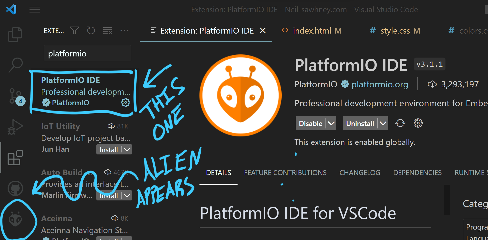
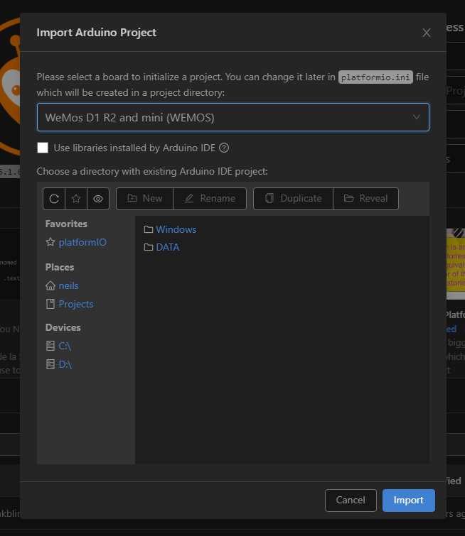
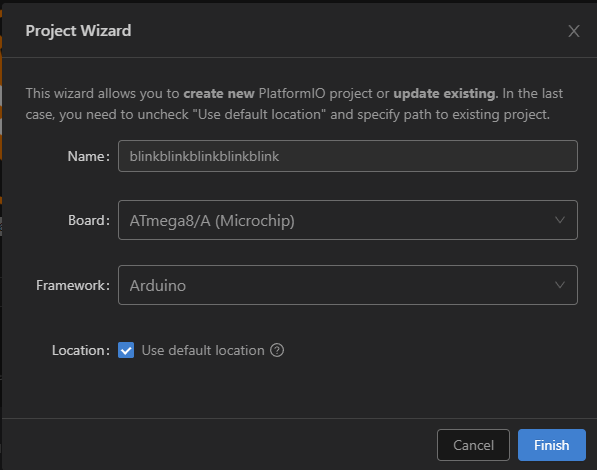
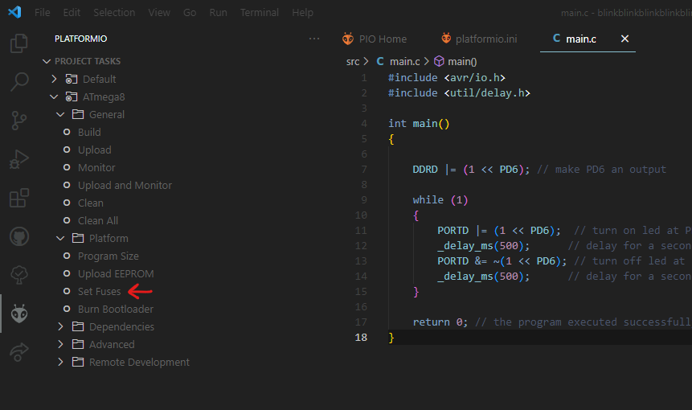

How to Use Symbolic Python to Solve and Visualize Dynamical Systems
-Neil Sawhney
If you've worked with some advanced dynamics problems, you'll know that it's often next to impossible to derive the equations of motion by hand.
While most courses will teach you how to solve these kinds of systems using matrices in matlab or python, I'll show you how to use the Sympy.physics.mechanics module in python to solve for the equations of motion symbolically.
These can then be visualized by numerical integration of the equations of motion. Below is a visualization I made of a basketball spinning on a finger, which we will use as an example.
Pros of using this method
-
PlatformIO is versatile and can be used for programming a vast variety of microcontrollers and development boards in almost any language and framework, as opposed to MPLAB which is only used for programming their microcontroller families.
-
If you're an avid programmer, there's a high chance you're already using and familiar with VSCode as opposed to MPLAB. Instead of learning many different ide's for each purpose, you can use one.
Cons of using this method
-
MPLAB provides official, dedicated support and seamless compatibility with Microchip's microcontrollers.
-
Built-in tools in MPLAB are tailored for Microchip's devices, offering better integration than PlatformIO and VSCode.
There are good motives for both methods, but personally I prefer the VSCode route. Unfortanately i've found this method to be somewhat tricky to get started without lots of research, despite being extremely simple. Hopefully this article solves that problem.
Some prerequisites/supplies to follow this guide:
VSCode installed + familiarity of the basics
Basic breadboarding ability
An AVR Microntroller
A Programmer for the Microcontroller (can be any arduino or esp)
Step 1: Install The PlatformIO Extension in VSCode
OPTIONAL STEP: Set up an arduino or esp as a programmer
Dont have a programmer? Neither do I, but I do have a ton of arduinos and esp32's and esp8266's laying around, so lets convert one of those into an AVRISP programmer.
I'm using an esp8266 mounted on a WeMos D1 mini Dev board.
Lucky for us, code to make our board act as an AVRISP is provided to us by the arduino foundation as example code. You can go ahead and pull up that example code in the Arduino IDE, make the neccessary pin changes, and upload it. That being said, we have platformIO now, so let's get some practice using that instead.
Download the arduino example code from the following github repo.
In VSCode, Click the PlatformIO icon (the alien) in the bottom left corner of VSCode and click "PIO Home → Open" under QUICK ACCESS.
If you're using an esp family board, make sure to install the correct platform for that board, in my case it is the "Espressif 8266" platform. Click on "Platforms" on the left, then "Embedded" on the top, then finally find and click on "Espressif 8266" and install it.
Click on "Import Arduino Project", and select the place in which you saved the example code (make sure to unzip it first). Also select your board in the dropdown, in my case, I've selected "WeMos D1 R2 and mini (WEMOS). Click "Import".
Find the following lines of code in the folder named "src".
// The standard pin configuration.
#ifndef ARDUINO_HOODLOADER2
#define RESET 10 // Use pin 10 to reset the target rather than SS
#define LED_HB 9
#define LED_ERR 8
#define LED_PMODE 7
GPIO7 - 10 on my board is not accessible, so I changed this to the following, note that the D infront of the number specifies that i'm referring to the digital pin (the label on the dev board) and not the gpio pin.
// The standard pin configuration.
#ifndef ARDUINO_HOODLOADER2
#define RESET D8 // Use pin 10 to reset the target rather than SS
#define LED_HB D1
#define LED_ERR D2
#define LED_PMODE D3
Wire LED's to the defined LED pins for some extra debugging info during programming.
You may have to add the following lines to your platformio.ini with your boards upload speed, and the com port that your board is plugged into.
upload_speed = 9600
upload_port = COM10
Otherwise, That's it for the programmer software! Go ahead and upload the code! You can do so by clicking ctrl-alt-u or finding the dropdown next to the checkmark in the top right, and pressing "Upload".
All that's left is to connect the MOSI, MISO, SCK, VCC, GND and the RESET pin (which we just defined) on your programmer to the respective pins on your microcontroller. You should be able to find this by googling the pinout of the two boards. Here is the wiring for the ATMega8 to the WeMoS D1 mini.
Step 2: Create a new project
Click the PlatformIO icon (the alien) in the bottom left corner of VSCode and click "PIO Home → Open" under QUICK ACCESS.
We need to add the Atmel AVR Platform so that we can get access to all the necessary libraries for using the IO Ports on our microcontroller. This also automatically defines certain board specific variables that will help make uploading work properly.
Click on "Platforms" on the left, then "Embedded" on the top, then finally find and click on "Atmel AVR" and install it. The default version should be fine.
Sweet, now lets create our new project. Go back to "PIO Home → Open", and click the "New Project" button.
Name the project whatever you want. In my case my board is an ATmega8, but select whichever board you are using. Feel free to change the location your project is saved by unchecking the "Use default location" box. Click Finish.
Step 3: Edit the platformio.ini file in your project
First thing's first, if you dont want to use the arduino framework, delete the following line.
framework = arduino
We're going to blink an led here, so the arduino framework is wayyy overkill... deleted.
I happen to be using an esp8266 programmed to act as an AVRISP, so from the PlatformIO documentation for Atmel AVR boards, lets grab all the juicy stuff under "AVRISP" in the "Configuration for the programmers" section.
upload_protocol = custom
upload_port = SERIAL_PORT_HERE
upload_speed = 19200
upload_flags =
-C
; use "tool-avrdude-megaavr" for the atmelmegaavr platform
${platformio.packages_dir}/tool-avrdude/avrdude.conf
-p
$BOARD_MCU
-P
$UPLOAD_PORT
-b
$UPLOAD_SPEED
-c
stk500v1
upload_command = avrdude $UPLOAD_FLAGS -U flash:w:$SOURCE:i
Change the words "SERIAL_PORT_HERE" with the serial port your programmer is plugged into. In my case it's COM3.
Almost done, all that's left is to add 2 extremely important lines.
We need to tell platformIO the clock frequency of our chip, and whether we plan on using the internal oscillator, or if we plan to wire up an external one. By default, plaformIO assumes the cpu fqz is 16MHz, the ATMega8 that I am using has an 8MHz internal oscillator. PlatformIO assumes the oscillator is external by default.
This is all in the documentation, but I bricked a microcontroller anyway by not paying close attention to this. If you do not set this correctly, your microcontroller will not be able to communicate with your computer! Check the documentation of your microcontroller!
We need to add the following two lines, make sure to change the cpu and oscillator type to your needs.
board_build.f_cpu = 8000000L
board_hardware.oscillator = internal
Here is my entire platform.ini file.
[env:ATmega8]
platform = atmelavr
board = ATmega8
upload_protocol = custom
upload_port = COM3
upload_speed = 19200
board_build.f_cpu = 8000000L
board_hardware.oscillator = internal
upload_flags =
-C
; use "tool-avrdude-megaavr" for the atmelmegaavr platform
${platformio.packages_dir}/tool-avrdude/avrdude.conf
-p
$BOARD_MCU
-P
$UPLOAD_PORT
-b
$UPLOAD_SPEED
-c
stk500v1
upload_command = avrdude $UPLOAD_FLAGS -U flash:w:$SOURCE:i
Step 4: Create a Program
Click on the folder named "src" to reveal its contents. You should see that platformIO rudely put disgusting arduino code here in a file called main.cpp. If you want to use the arduino framework, go ahead, but we're going to go ahead and delete that file.
Create a new file under src called main.c.
It's also possible to use assembly or cpp, but I'm going to use C for this tutorial.
The following code blinks an LED on PD6 of the ATMega8, slap whatever you want in main if you had bigger plans in mind.
#include <avr/io.h>
#include <util/delay.h>
int main()
{
DDRD |= (1 << PD6); // make PD6 an output
while (1)
{
PORTD |= (1 << PD6); // turn on led at PD6
_delay_ms(500); // delay for a second
PORTD &= ~(1 << PD6); // turn off led at PD6
_delay_ms(500); // delay for a second
}
return 0; // the program executed successfully
}
Step 5: Set Fuses
This is the scary part that could destroy your micrcontroller. Double tripple check that you set your cpu fqz and oscillator type correctly in the platform.ini file. Rest assured, the name "fuse" is a misnomer, as long as you can still communicate with the chip, you'll be able to change the fuse values again later, incase you decide later that you do or dont want to use an external oscillator.
Click the alien in the bottom left, then navigate to the Set Fuses button and give it a click. Note, if you want to use the arduino framework, you'll also have to click the burn bootloader button.
Step 5: Upload your code
Yay! Just press ctrl-alt-u, or find the "upload" button in the top right corner, or above the set fuses button, or in any of the other places its probably hidden to upload your code (which builds first by default) and watch that led blink!
Note that your microcontroller won't actually execute the code until you disconnect the Reset pin on the microcontroller from your programmer. For this reason i've wired a push button inbetween the reset pin of my programmer and microcontroller in the normally open configuration. This makes it so that you can leave everything plugged into the breadboard, and all you have to do is hold down the button when the code is uploading.